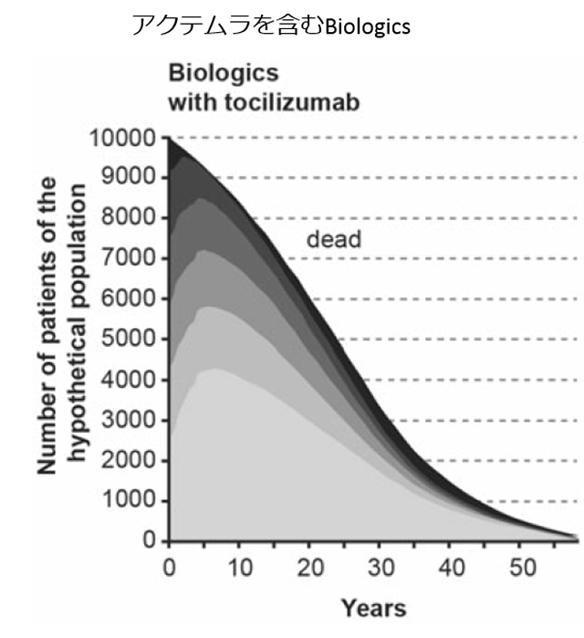
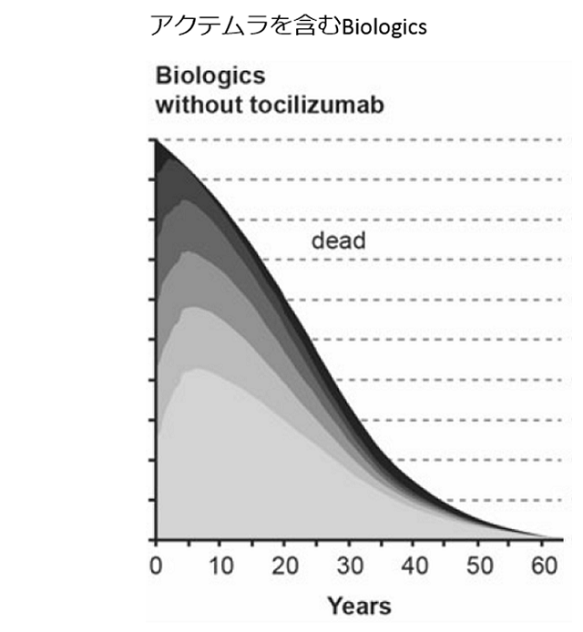
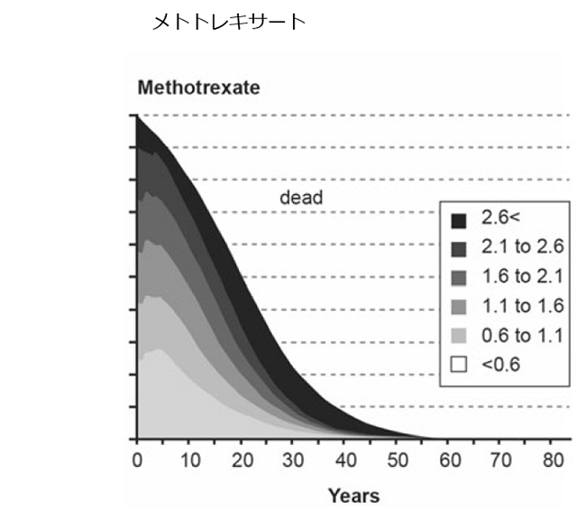

包括的原則に関連するアクテムラのデータ
MTX治療と生物学的製剤治療のJ－HAQの年次推移



健康な状態で過ごすことのできるJ-HAQスコア<1.1の期間は、アクテムラを含むBiologics14.27年、MTX 7.29年であった。
J-HAQ：HAQは慢性疾患患者の身体的機能障害の程度を評価するための患者自身が行う20項目のアンケート。欧米の生活習慣に合わせて作成されたHAQを日本人の生活習慣に合わせたものに置き換えたものがJ-HAQ。
Tanaka E,et.al:Mod Rheumatol. 2016 Jul 29:1-10. [Epub ahead of print]